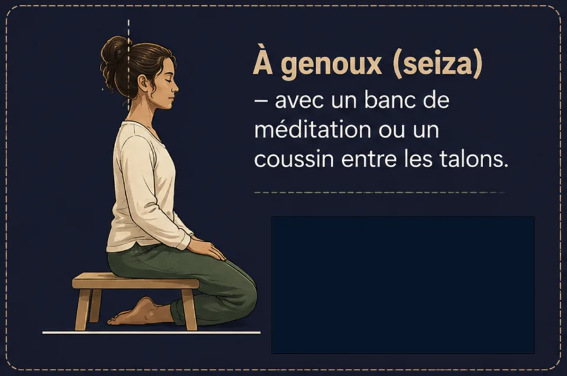
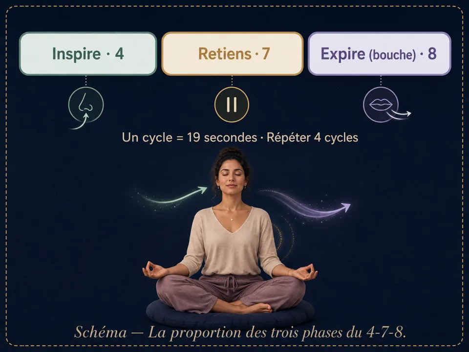

Méditation pour dormir : t’endormir plus facilement
Pourquoi le sommeil fuit quand on le poursuit, la posture du soir, la respiration 4-7-8 et comment une méditation guidée pour dormir agit vraiment.
Une méditation pour dormir ne cherche pas à t'endormir de force : elle occupe doucement l'esprit jusqu'à ce qu'il lâche prise tout seul. Posture allongée, respiration 4-7-8, scan corporel du soir, réveil de 3 h du matin : voici comment t'endormir plus facilement, ce soir.
Pourquoi le sommeil fuit quand on le poursuit
Tu éteins la lumière, et c'est précisément là que l'esprit s'allume : la journée repasse, la liste de demain s'écrit toute seule, une phrase entendue à midi revient en boucle. Plus tu essaies de dormir, plus le sommeil recule — parce que l'effort est un état d'éveil.
La méditation pour dormir prend le chemin inverse : elle ne poursuit pas le sommeil, elle prépare les conditions dans lesquelles il vient tout seul. On donne à l'attention un objet simple — la respiration, les sensations du corps, une voix calme — et le mental, qui n'a plus la scène pour lui, baisse le rideau.
La posture du soir : allongé, enfin
Partout ailleurs dans la méditation, s'endormir est un obstacle. Ici, c'est la sortie triomphale. La position allongée — savasana — devient donc la posture reine du soir :

- Allongé sur le dos, bras le long du corps, paumes vers le ciel.
- Un coussin fin sous la tête, un autre sous les genoux si le bas du dos tire.
- Au lit, sous la couette : c'est le seul contexte où méditer dans le lit est recommandé — tu n'auras pas à bouger quand le sommeil arrive.
La respiration qui endort : le 4-7-8
De toutes les techniques de respiration, le 4-7-8 est celle du sommeil : on inspire 4 temps, on retient 7, on expire lentement 8. C'est l'expiration longue qui fait le travail — elle ralentit le rythme cardiaque et signale au corps que la nuit peut commencer.

- Expire d'abord complètement, par la bouche.
- Inspire par le nez en comptant 4.
- Retiens l'air en comptant 7 — sans crisper les épaules.
- Expire lentement par la bouche en comptant 8, comme un soupir long.
- Enchaîne 4 à 8 cycles, puis laisse la respiration redevenir naturelle.
La méditation guidée pour dormir : comment elle agit
Une méditation guidée pour dormir fait exactement ce que le mental refuse de faire seul le soir : elle occupe doucement l'attention. La voix parcourt le corps zone par zone — c'est le scan corporel du soir —, propose des images calmes, ralentit ses propres phrases, et laisse des silences de plus en plus longs. Tu n'as rien à réussir : juste suivre, et te laisser distancer.
Bien la choisir
- Longueur : 10 à 20 minutes suffisent — le sommeil vient souvent avant la fin.
- Voix : choisis celle qui te berce, à vitesse lente.
- Après la fin : une séance qui se termine en silence, sans musique de fin ni sonnerie.
Dans Awakening Minds, toute la catégorie Rêves & Sommeil est écrite pour ça : des méditations guidées pour s'endormir, narrées lentement, qui se terminent dans le silence — et un journal des rêves pour le matin. L'application est gratuite, sans abonnement, et tout s'écoute hors ligne, dans le noir, téléphone posé face contre la table de nuit.
Le réveil de 3 h du matin
Se réveiller en pleine nuit est normal — c'est se rendormir qui se travaille. Trois règles aident :
- Pas d'écran, pas d'heure. Regarder l'heure lance le calcul mental (« il me reste 3 h 40… ») — exactement ce qu'il faut éviter.
- Reviens au corps, pas aux pensées. Un scan corporel lent, des pieds vers la tête, ou quelques cycles d'expiration longue.
- Si l'agitation gagne : mieux vaut une méditation guidée douce au casque que quarante minutes de lutte dans le noir.
Questions fréquentes
Peut-on s'endormir pendant une méditation guidée ?
Le soir, c'est même le but : les méditations pour dormir sont écrites pour être quittées en route. Choisis une séance qui se termine en silence, et laisse la voix continuer sans toi.
Combien de temps avant l'effet ?
La détente du corps vient dès la première séance ; l'endormissement plus rapide s'installe en général en une à deux semaines de pratique régulière, à la même heure chaque soir.
Écouteurs ou haut-parleur ?
Les deux marchent. Le haut-parleur à faible volume évite d'avoir à retirer les écouteurs quand le sommeil vient ; un seul écouteur est un bon compromis si tu partages la chambre.
Envie de pratiquer plutôt que de lire ?
Tout ce que décrit cet article se pratique dans Awakening Minds, application de méditation gratuite : 195 méditations guidées en français — sommeil, respiration guidée, mondes immersifs — sans abonnement, sans publicité, sans compte, et tout fonctionne hors ligne.
✦ Découvrir l'application gratuiteÀ lire ensuite
Apprendre à méditer : le guide du débutant
Qu'est-ce que méditer, pourquoi commencer, et les 5 idées reçues qui bloquent les débutants. Un guide simple et gratuit pour ta première méditation.
La posture de méditation : 4 positions, 7 points
Chaise, tailleur, seiza ou allongé : les 4 positions de méditation en schémas, et les 7 points d’une posture digne et détendue.